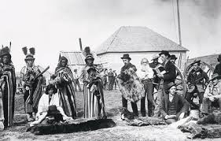
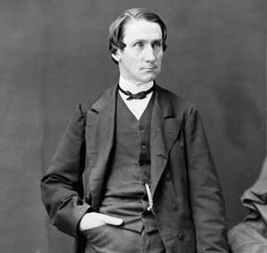
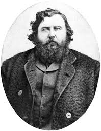
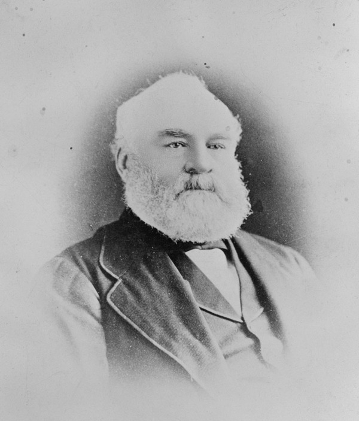

Treaty 6 was originally proposed in 1871 by the Plains Indigenous people, they wanted to negotiate a treaty with the Crown that would protect them from the settlement of outsiders on their lands, and they were also concerned with starvation due to the decreasing supply of Bison but the Crown refused because they didn’t need see it as necessary. But in Luly 1875, after the Indigenous had started sending foreigners off their land in order to get more attention from the Crown so they would understand the need for a treaty, and in July 1876, Alexander Morris left for Fort Carlton to start the negotiations for the treaty.
An image of Fort Carlton on the left and Alexander Morris on the right


Treaty 6 was then made in August 23rd 1876 near Calton and the other signings regarding happened at August 28th, and at Fort Pitt on September 9th. This Treaty was between the Queen of Great Britain and Ireland and with the Plains and Woods Cree and other Indigenous tribes, but the Queen’s officials represented her, that being Alexander Morris, James McKay and William Joseph Christie.
Images of James McKay and William Joseph Christie respecitively, as mentioned prior, they represented the Queen of Great Britain in making the Treaty between the Plains and Wood Cree


As for these benefits, the Queen agreed to set aside farming and other reserve lands for the Indigenous people, about 1 square mile per 5 people and that government officials would work with the chiefs to pick the best location. Land and rights can be sold or used with permission from the Indigenous people and each person would receive $12 as compensation for past claims. In addition to this, censuses of the Indigenous people would be taken and each person would be given $5, along with that, the government would also spend $1500 annually on ammunition and finishing supplies and a few other compensations as well.